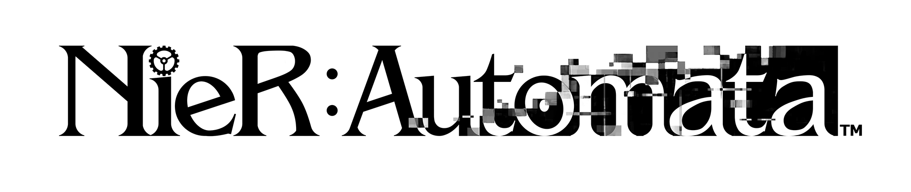
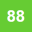

NieR:Automata
NieR:Automata is an action role-playing video game developed by Platinum Games and published by Square Enix for the PlayStation 4 and PC.
It is the indirect sequel to both NieR RepliCant and NieR Gestalt (NIER), and is set in the year 11945, during the 14th Machine War.

Metascore
Generally favorable reviews based on 100 critics
User Score
Generally favorable reviews based on 2560 Ratings